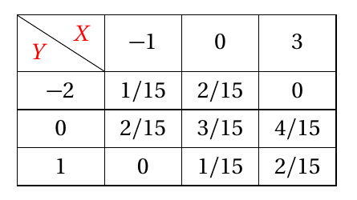

|
勘误信息
我把目前发现的所有错误列在了下面，列表中的“XXXX习题汇编YY”即为“XXX习题汇编中的第YY章”。
微积分课件
感谢@黄静思等人提供的勘误信息！
1. 第4章35页最后一行公式应为：
\[
f\left(x_{1}\right)+f\left(x_{2}\right)=2 f\left(x_{0}\right)+\frac{\left(x_{1}-x_{2}\right)^{2}}{\color{red}8}\left(f^{\prime \prime}\left(\xi_{1}\right)+f^{\prime \prime}\left(\xi_{2}\right)\right),
\]
2. 第5章12页例3第(2)小题：\(\displaystyle \int \sin(3x+4)\mathrm{d}{x}\) 答案应为 \({\color{red}-\dfrac13}\cos (3x+4)+C\);
3. 第5章12页练习1第(1)小题：\(\displaystyle \int \mathrm{e}^{-3x+2}\mathrm{d}{x}\) 答案应为 \(-\dfrac13\mathrm{e}^{-3x+{\color{red}2}}+C\);
4. 第5章12页练习6：求不定积分 \(\displaystyle \int \cos^2 2x \mathrm{d}{x}\), 答案应为 \(\dfrac{1}{8} \sin4x +\dfrac{x}{2}+C\);
5. 第5章第20页例19：应为
\[
\begin{aligned}
\int \frac{1}{\sqrt{x+1}+\sqrt[3]{x+1}} \mathrm{d} x&=\int \frac{1}{t^{3}+t^{2}} \cdot 6 t^{5} \mathrm{d} t
=6 \int \frac{t^{3}}{t+1} \mathrm{d} t\\
&=2 t^{3}-3 t^{2}+6 t{\color{red}-6 }\ln |t+1|+C
\\
& = 2 \sqrt{x+1}-3 \sqrt[3]{x+1}+6 \sqrt[6]{x+1}\\
&\quad {\color{red}-6} \ln (\sqrt[6]{x+1}+1)+C
\end{aligned}
\]
6. 第5章第26页定理3下侧应为：1. 分母中若有因式\({\color{red}(x+a)^k}\)时，则分解后为\(\ldots\);
微积分习题汇编
感谢@yx, @Camellia 等人提供的勘误信息！
1. 微积分习题汇编01第01题：题目中“需求弹性为\(\displaystyle\eta(100)=-\frac{100}{f(100)},f’(100)=0.25\)”应改为“需求弹性为\(\displaystyle\eta(100)=-\frac{100}{f(100)}{\color{red}\cdot}f’(100)=0.25\)”
2. 微积分习题汇编第6章第9题参考答案应为 \({\color{red}B}\), 此题视频讲解答案是正确的.
3. 微积分习题汇编第06章第34题视频讲解59秒左右, 第一行第一个等号后应为：\(\displaystyle \int_{-2}^{\color{red}-1}(x^2-2x-2),\) 相应地, 第二行第一个等号后应为：\(\displaystyle \frac13 x^3-x^2-3x\big|_{-2}^{\color{red}-1}.\) 此处为笔误, 最终结果无误.
4. 微积分习题汇编第08章第29题视频讲解05分33秒左右, 最后一行应为：\(\displaystyle f_1'+xyf_{11}’’-\frac{1}{x^2}f_{\color{red}2}’-\frac{y}{x^3}f_{22}’’,\) 此处为笔误+口误.
5. 微积分习题汇编第10章第16题视频讲解02分55秒处, 特征方程应为：\(\color{red}\lambda ^2- 2 = 0.\) 该错误为笔误/口误不改变原有结论.
概率统计习题汇编
感谢@Lumos, @苦工, @dormant, @甜甜, @灰灰, @Lucy小路等人提供的勘误信息！
1. 概率统计习题汇编01第17题：第(1)问应为：求至少有\(1\)只蓝球的概率;
2. 概率统计习题汇编01第18题：答案应为 \(\dfrac{25}{69}\);
3. 概率统计习题汇编02第7题：密度函数中应为 \(cx^4\), 答案应为 (D) \(5\);
4. 概率统计习题汇编03第6题：联合概率密度函数应为：
\[
\begin{equation*}p(x,y)=\begin{cases}\frac{1}{2}(x+y)\mathrm{e}^{-(x+y)}, & \ x>0,y>0\newline 0, & \ \text{其它}\end{cases};\end{equation*}
\]
5. 概率统计习题汇编04第15题：条件中概率分布中的 \(X\) 和 \(Y\) 的位置写反了，应该为：

6. 概率统计习题汇编03第4题：答案应为 \(7/30\);
7. 概率统计习题汇编05第7题：答案漏写，应为 \(0.9708\);
8. 概率统计习题汇编05第8题：答案应为 \(0.41\);
9. 概率统计习题汇编07第16题：极大似然估计量应为 \(\widehat{\theta} = - \dfrac{n}{\sum_{i = 1}^{n}\ln X_{i}}\).
|